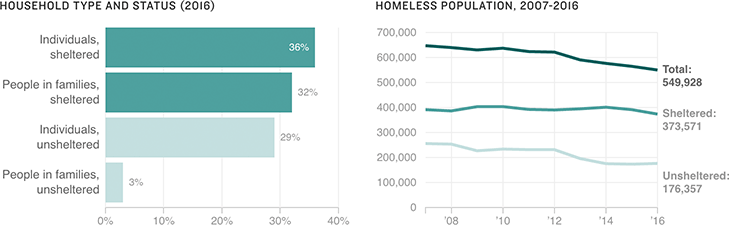

Number Of People In Homelessness Declines Slightly
Nearly 550,000 people were homeless in January 2016 — down 3 percent from 2015 — according to a national point-in-time count conducted every year in late January. Of that population, 68 percent were in shelters.
